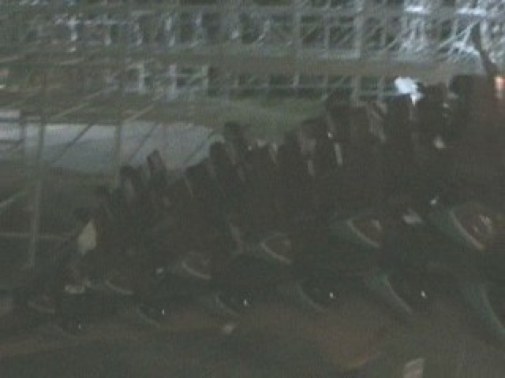

| |
Raging Bull Review

We're here at Six Flags Great America. Today's ride we'll be reviewing for you is Raging Bull. This is one of the many B&Ms at Six Flags Great America and one of the park's best rides. Once you get in the car and pull down the clamshell lap bar. Now clamshells are awesome as you have a lot of freedom. But trust me. They keep you in. After going through the standard B&M Prelift dip, you then begin to climb the lifthill. Higher and Higher you go. If you look around, you get a fantastic view of Six Flags Hurricane Harbor to your left and the rest of Six Flags Great America to your right. Right as you begin to crest the lifthill, if you're in the back, you're about to get a really special treat (And I'm not being sarcastic). You then get a really powerful moment of ejector air. Trust me, you're ass is out of that seat and floating for a millisecond while the rest of the train dives to the ground. And it ROCKS!!!! And then you get yanked down towards the ground, gaining a sh*tload of speed. Thanks to the great airtime and really big drop, you're having so much fun that you forget to shout "TAKE THE TUNNEL!!!!" as you plow through that tunnel. With all that amazing speed, you rip back into daylight and reach for the sky. You then head into a turnaround. We may have lost some speed in that turnaround, but then you simply drop to the ground and make up everything that we lost. We then rise up into an airtime hill. We expect to get some pretty good floater air on this hill, when suddenly, we hear a nasty hiss and notice something has gone terribly wrong. Yup. It's the sound of evil trim brakes, robbing us of our speed. Yep. This bull has been neutered. =( I'd call PETA and tell them of this unfair castration, except PETA is a bunch of morons who just kill animals and make commercials about sex. So there's nothing we can do about this. Anyways, we drop down and then rise into the next hill. While there's no airtime, it does twist you at 90 degrees, so that's cool. After that, we rise up into another hill with just leads us into another turnaround. It's not crazy or insane or anything, but it's still fun. Then you dive back down and twist up. You get alot of banking as you twist up and reach the mid course brakes. We then head off the mid course brakes and get a wonderful suprise. Airtime!!! Actual Airtime!!! =) Now it's not nearly as strong as the first drop, but still!!! Airtime!!! We then rise up into another bunny hop. And there's no airtime on it. =( But it's still fun. We then head into a big swooping turn that circles us around the lifthill. After cruising through that, you dip down through another drop and suprisingly get more airtime. Then you pretty much just snake through a couple of S Turns and twist up before dipping down and twisting up into the brake run. It's a very fun ride and all, but man do the trims reduce the quality. But before you complain, I will admit that it's still a very good coaster. I just see it being an even better coaster without those trims. Plus it's one of the star attractions at Six Flags Great America, so I definetly recommend checking out Raging Bull.
8/10
Location: Six Flags Great America
Opened: 1999
Built by: B&M
Last Ridden: August 13, 2010
Raging Bull Photos




Home
|